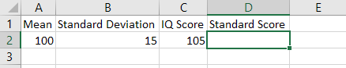

Given the mean and the standard deviation of a data set, we can use the function STANDARDIZE(value, mean, standard deviation) to convert a data value in it to its standard score, also known as the -score.
Example: The Stanford-Binet IQ test is scaled so that scores are normally distributed with a mean of 100 and a standard deviation of 15. Find the standard scores for IQ scores of 105.
Solution:
Create the following array in a new worksheet in Excel.

In D2, type in the following formula
=STANDARDIZE(C2,A2,B2), then hit enter, the standard scores will show in D2.
Instead, one can use Insert Function to create the formula:
D2, then click to insert function.OK.C2, A2 and B2, then click OK, you will get the standard score.The standard score is approximately 0.33.
The percentile is a value below which a given percentage of data fall.
In Excel, to find the percentile, we can use the function NORM.INV(percentage, mean, standard deviation).
Example: The Stanford-Binet IQ test is scaled so that scores are normally distributed with a mean of 100 and a standard deviation of 15. Find the 95th percentile.
Solution:
D2, type in the following formula
=NORM.INV(C2,A2,B2), then hit enter, the percentile will show in D2.To create the formula using Insert Function, you may follow the same steps as in the previous example.
The 95 percentile for IQ scores is approximately 125.
The percentile rank of a data value is the percentage of data below the given data value.
In Excel, to find the percentile rank, we can use the function NORM.S.DIST(standard score) if the standard score is know or NORM.DIST(data value, mean, standard deviation, TURE) in general.
Example: The Stanford-Binet IQ test is scaled so that scores are normally distributed with a mean of 100 and a standard deviation of 15. Find the percentile rank of the IQ score 120.
Solution:
Since the standard score is not given, we will use the function NORM.DIST(data value, mean, standard deviation, TURE).
D2, type in the following formula
=100*NORM.DIST(C2,A2,B2,TRUE), then hit enter, the percentile rank will show in D2.To create the formula using Insert Function, you may follow the same steps as in the previous examples.
The IQ score 120 has the percentile rank approximately 91.
Example: The scores of an uniform final exam is approximate normally distributed with a mean 62 and standard deviation 13.
Please show your work in Excel.